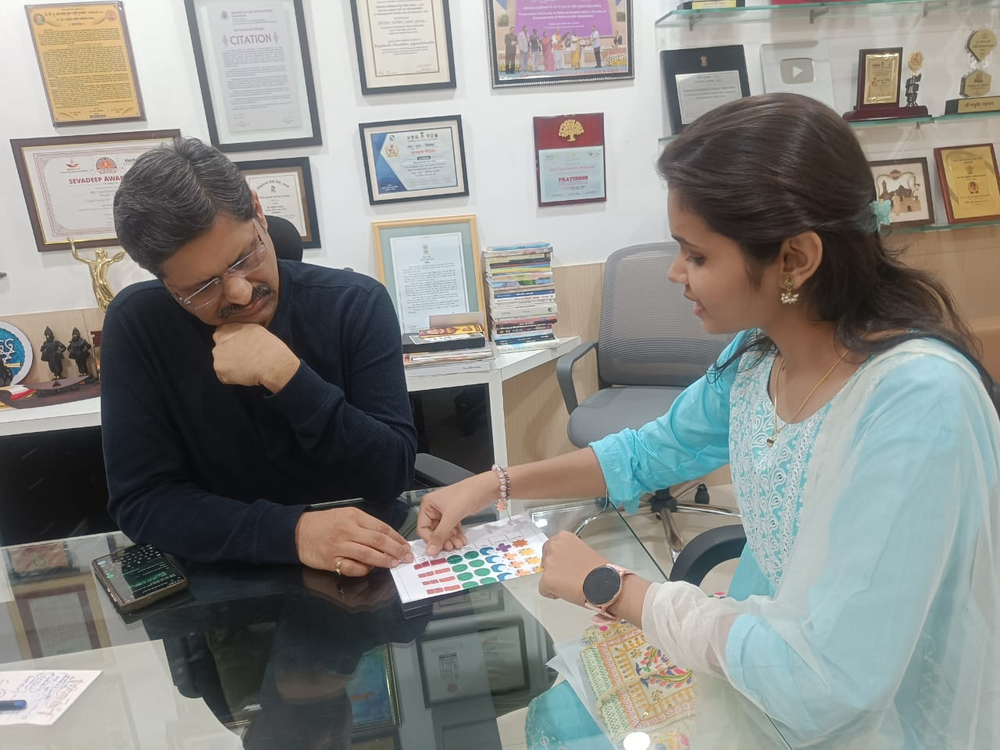
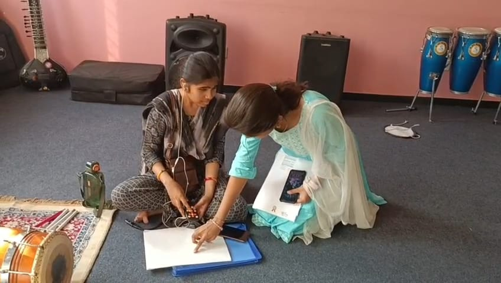
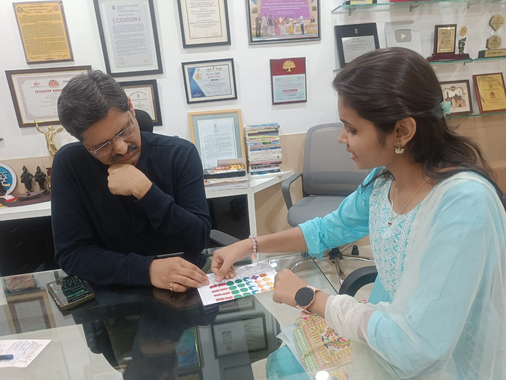
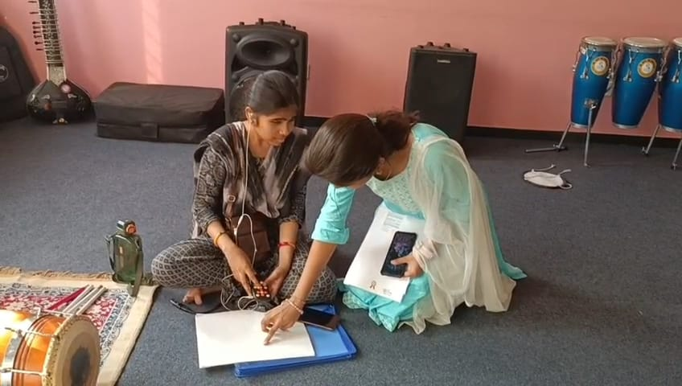
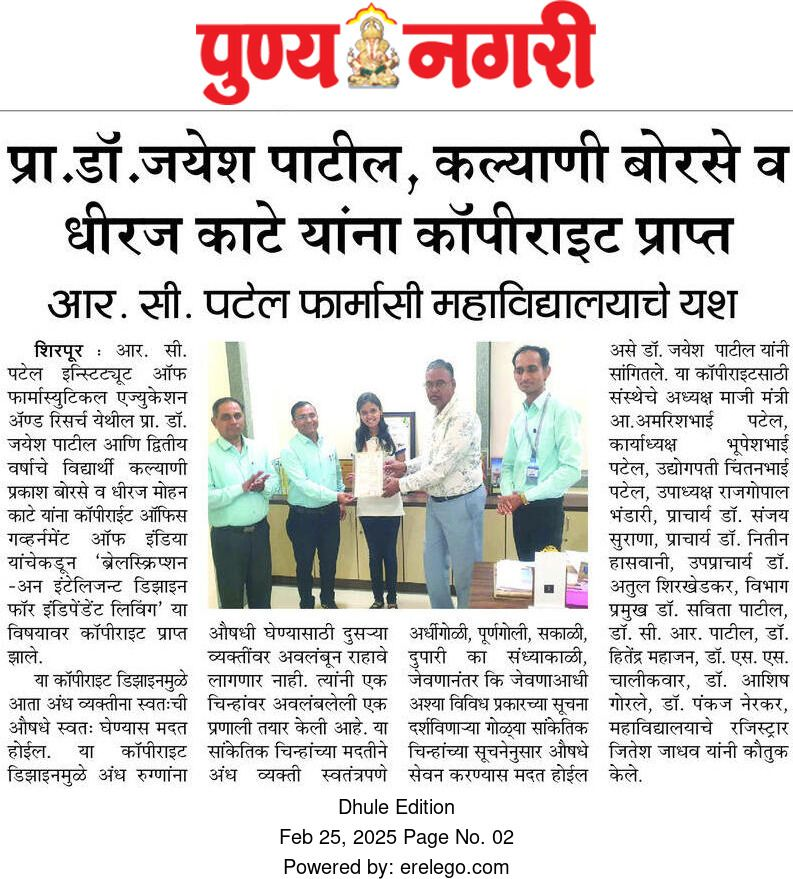
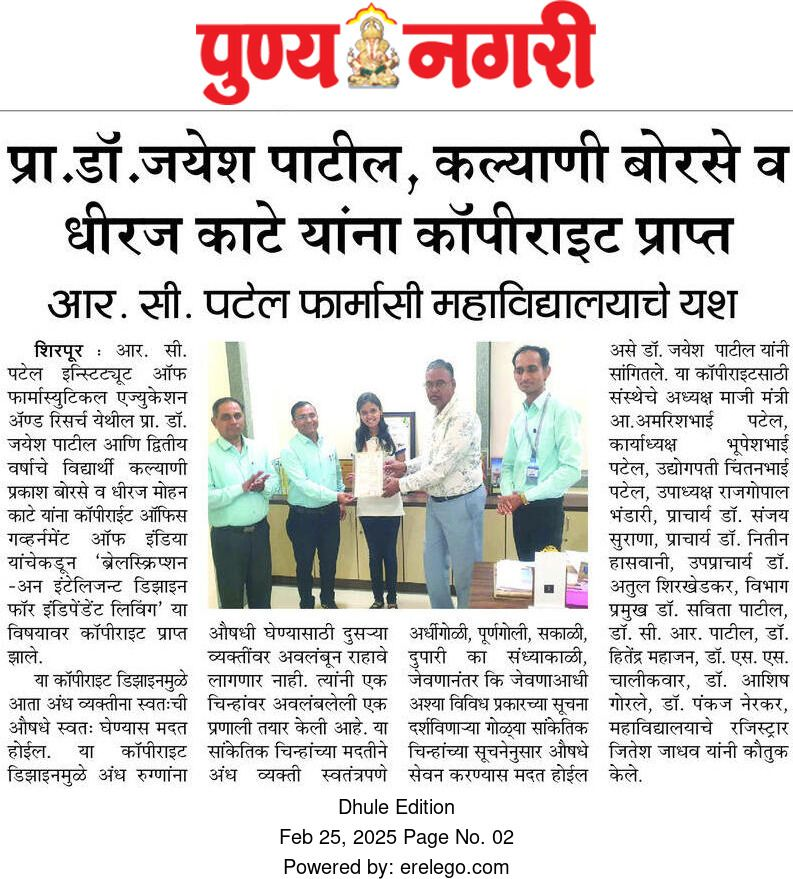

BrailleScription Hub
“Innovation Matters, But Humanity Is What Makes It Meaningful.”
“Innovation Matters, But Humanity Is What Makes It Meaningful.”
A glimpse into our journey with visually impaired participants and the Deepstambh Foundation.

 



Our innovation is protected — not just as a design, but as a concept, symbol system, and identity.
 

“For the first time, I didn’t have to ask anyone what medicine this is, and when to take?. That feeling… freedom… it is priceless.” ♿💡